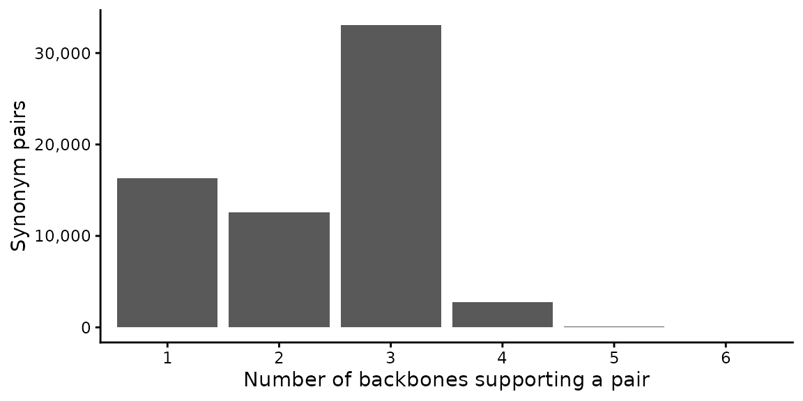

RESY taxonomy
Gilles Colling
2026-09-21
taxonomy.RmdThis vignette illustrates how to harmonise the species names of a
vegetation survey before it is classified with
resy_classify(). RESY implements the Expert System
(ESy) framework (Chytrý et al. 2020; Bruelheide et al. 2021), and
resy_classify() matches the species names it is given
against the vocabulary of the expert system. That works directly for
data from the European Vegetation Archive. Plot data named under a
general backbone (GBIF, World Flora Online, POWO, Euro+Med, a national
checklist) often uses different strings for the same taxon: an
accepted-name synonym, an author citation, or a spelling variant. Those
names have to be harmonised to the expert vocabulary first. RESY treats
this as a separate step, so you can check the taxonomic decisions before
they affect a classification.
-
Resolve the species names to the vocabulary of the
expert system with
resy_resolve_taxa(). -
Inspect the result with
resy_summarize_taxa(). -
Classify the resolved data with
resy_classify().
The shipped synonym table
RESY ships a synonym table that maps alternate species names to the canonical name used by the EUNIS-ESy expert system. It pools synonymy from six backbones (Euro+Med, WFO, GBIF, Catalogue of Life, ITIS, NCBI), so a name coming from any of them can resolve without you having to say which backbone it came from.
The table was built on 2026-09-21 with taxify 0.5.5, against the
EUNIS expert system 2025-10-03, from the backbone releases below.
data-raw/build_synonyms.R and the taxify lockfile next to
it in the source repository rebuild it from these versions.
| Backbone | Release | Upstream data | Downloaded | Content id |
|---|---|---|---|---|
| euromed | 2026.08 | 2026-08-27 | 06668202 | |
| wfo | 2026.06 | 2026-09-15 | 0db73976 | |
| gbif | 2026.08 | 2023-08-28 | 2026-08-30 | 4ecece7e |
| col | 2026.09 | 2026-09-14 | c2999654 | |
| itis | 2026.09 | 2026-09-14 | c506652f | |
| ncbi | 2026.09 | 2026-09-14 | 7553eb41 |
The synonyms are binomials (genus and species epithet). Infraspecific names, hybrid formulas, and bare genera are not in the table, so a name of that kind is not resolved through it.
syn <- resy_read_synonyms()
nrow(syn)
#> [1] 64808
head(syn)
#> synonym esy_canonical source accepted_in
#> 1 Abelmoschus bammia Abelmoschus esculentus col;gbif;wfo <NA>
#> 2 Abelmoschus longifolius Abelmoschus esculentus col;gbif;wfo <NA>
#> 3 Abelmoschus praecox Abelmoschus esculentus col;gbif;wfo <NA>
#> 4 Abelmoschus tuberculatus Abelmoschus esculentus col;gbif;wfo <NA>
#> 5 Hibiscus bammia Abelmoschus esculentus col;gbif;wfo <NA>
#> 6 Hibiscus ficifolius Abelmoschus esculentus col;gbif;wfo <NA>Each row is one alternate spelling (synonym), the
canonical ESy name it resolves to (esy_canonical), and the
backbone(s) that support the pairing (source). The column
accepted_in names the backbones that list the synonym as an
accepted name under the same author as the synonym rows supporting the
pair. A backbone appears in both source and
accepted_in when it holds an accepted row and a synonym row
for the name. The column is empty for 89% of the pairs.
head(syn[!is.na(syn$accepted_in), ], 4)
#> synonym esy_canonical source accepted_in
#> 32 Abies hudsonia Abies balsamea col;wfo wfo
#> 40 Abies panachaica Abies cephalonica col;gbif;wfo gbif
#> 41 Abies peloponnesiaca Abies cephalonica col;gbif;wfo gbif
#> 45 Picea cephalonica Abies cephalonica col;gbif;wfo wfoA pair is listed under every backbone that supports it, so the counts per backbone add up to more than the number of rows.
per_backbone <- table(unlist(strsplit(syn$source, ";", fixed = TRUE)))
support <- data.frame(
backbone = names(per_backbone),
pairs = as.integer(per_backbone),
share = round(100 * as.integer(per_backbone) / nrow(syn), 1)
)
support <- support[order(-support$pairs), ]
knitr::kable(
support,
row.names = FALSE,
col.names = c("Backbone", "Synonym pairs", "% of table"),
format.args = list(big.mark = ",")
)| Backbone | Synonym pairs | % of table |
|---|---|---|
| gbif | 53,530 | 82.6 |
| wfo | 46,970 | 72.5 |
| col | 46,180 | 71.3 |
| itis | 4,050 | 6.2 |
| ncbi | 864 | 1.3 |
| euromed | 588 | 0.9 |
Most pairs are supported by more than one backbone:
per_pair <- table(lengths(strsplit(syn$source, ";", fixed = TRUE)))
support_n <- data.frame(
n_backbones = names(per_pair),
pairs = as.integer(per_pair)
)
ggplot(support_n, aes(x = n_backbones, y = pairs)) +
geom_col() +
scale_y_continuous(labels = function(x) format(x, big.mark = ",")) +
labs(x = "Number of backbones supporting a pair", y = "Synonym pairs") +
theme_classic()
Resolve names
resy_resolve_taxa() maps a column of names to the
canonical vocabulary. A name already equal to a canonical name resolves
to itself ("exact"); otherwise it is looked up in the
synonym table ("synonym"). A name that matches neither is
matched again with its author citation removed by
resy_clean_names() ("cleaned_exact",
"cleaned_synonym"); the name in your data is left as it is.
A name that still matches nothing stays NA and is flagged
"unresolved". Nothing is ever replaced with a best
guess.
plots <- data.frame(
TaxonName = c(
"Hibiscus praecox", # a synonym in the shipped table
"Abelmoschus longifolius", # another synonym
"Fagus sylvatica", # already a canonical name
"Anemone nemorosa L.", # canonical name with an author citation
"Not a real species 123" # resolves to nothing
),
stringsAsFactors = FALSE
)
resolved <- resy_resolve_taxa(plots, species_col = "TaxonName")
resolved
#> TaxonName canonical taxon_confidence
#> 1 Hibiscus praecox Abelmoschus esculentus synonym
#> 2 Abelmoschus longifolius Abelmoschus esculentus synonym
#> 3 Fagus sylvatica Fagus sylvatica exact
#> 4 Anemone nemorosa L. Anemone nemorosa cleaned_exact
#> 5 Not a real species 123 <NA> unresolvedresy_summarize_taxa() reports how many names resolved,
the breakdown by confidence, and the distinct names that stayed
unresolved.
resy_summarize_taxa(resolved, species_col = "TaxonName")
#> $n
#> [1] 5
#>
#> $resolved
#> [1] 4
#>
#> $unresolved
#> [1] 1
#>
#> $by_confidence
#> confidence n prop
#> 1 cleaned_exact 1 0.2
#> 2 exact 1 0.2
#> 3 synonym 2 0.4
#> 4 unresolved 1 0.2
#>
#> $unresolved_taxa
#> [1] "Not a real species 123"Unresolved names can be fixed by correcting a spelling, adding a row to your own crosswalk, or leaving them out.
Bring your own crosswalk
resy_resolve_taxa() also accepts your own crosswalk,
with three columns: synonym, esy_canonical,
and source. A small example ships with the package.
cw_path <- system.file("extdata", "example_crosswalk.csv", package = "RESY")
crosswalk <- resy_read_synonyms(cw_path)
crosswalk
#> synonym esy_canonical source
#> 1 Fagus silvatica Fagus sylvatica orthographic variant
#> 2 Pinus silvestris Pinus sylvestris orthographic variant
#> 3 Abies pectinata Abies alba taxonomic synonym
#> 4 Nardus stricta L. Nardus stricta author citation
#> 5 Anemone nemorosa L. Anemone nemorosa author citationPass it to synonyms=, and give the target names to
canonical= so resolution uses your table alone:
my_plots <- data.frame(
TaxonName = c("Fagus silvatica", "Abies pectinata", "Quercus robur"),
stringsAsFactors = FALSE
)
resy_resolve_taxa(
my_plots,
species_col = "TaxonName",
synonyms = crosswalk,
canonical = unique(crosswalk$esy_canonical)
)
#> TaxonName canonical taxon_confidence
#> 1 Fagus silvatica Fagus sylvatica synonym
#> 2 Abies pectinata Abies alba synonym
#> 3 Quercus robur <NA> unresolvedIf your crosswalk lives in an Excel sheet, read it yourself and pass the data frame. RESY validates the columns and uses it directly, so it needs no Excel package as a dependency:
crosswalk <- readxl::read_excel("my_crosswalk.xlsx")
resy_resolve_taxa(my_plots, synonyms = crosswalk,
canonical = unique(crosswalk$esy_canonical))A synonym that maps to more than one canonical name is dropped, so an ambiguous table cannot produce a silent substitution.
Classify the resolved data
Once names are in the expert vocabulary, classify as usual. Resolve
them against the vocabulary of the expert system you classify with (here
Apennine-test), write the resolved canonical name back to
the name column, keeping the original where a name did not resolve, and
pass the result to resy_classify().
library(readr)
species <- read_csv(
system.file("extdata", "data_example_species.csv", package = "RESY"),
show_col_types = FALSE
)
species <- head(species, 200) # keep the example quick
obs <- data.frame(
PlotObservationID = species$PlotObservationID,
TaxonName = species$species,
Cover_Perc = species$cover,
stringsAsFactors = FALSE
)
expert <- resy_load_expert(scheme = "Apennine-test")
expert_vocab <- unique(c(names(expert$aggs), unlist(expert$aggs, use.names = FALSE)))
resolved_obs <- resy_resolve_taxa(
obs, species_col = "TaxonName", canonical = expert_vocab
)
table(resolved_obs$taxon_confidence)
#>
#> exact
#> 200
resolved_obs$TaxonName <- ifelse(
is.na(resolved_obs$canonical), resolved_obs$TaxonName, resolved_obs$canonical
)
obs <- resolved_obs[c("PlotObservationID", "TaxonName", "Cover_Perc")]
header <- as.data.frame(unique(obs["PlotObservationID"]))
res <- resy_classify(obs, header, scheme = "Apennine-test")
head(res$result.classification)
#> HU32 KW76 YB18 NX70 OL48 YL40
#> "F" "F" "F" "F" "F" "F"For a quick pass,
resy_classify(..., resolve_taxa = TRUE) runs the resolution
against the expert vocabulary and then classifies in a single call, and
reports what it did in res$taxon_resolution. The two-step
route above is recommended, since it lets you check the unresolved names
before they reach the classifier.
Building a crosswalk with taxify
To assemble a crosswalk from offline backbone tables (no API calls),
the taxify package
matches names against Euro+Med, WFO, GBIF, Catalogue of Life, ITIS, and
NCBI and records the supporting backbone for each match. A table with
the columns synonym, esy_canonical, and
source built from those matches can be passed to
resy_resolve_taxa() as synonyms=.
References
Bruelheide H, Tichý L, Chytrý M, Jansen F (2021) Implementing the formal language of the vegetation classification expert systems (ESy) in the statistical computing environment R. – Applied Vegetation Science 24, e12562 https://doi.org/10.1111/avsc.12562
Chytrý M, Tichý L, Hennekens SM et al. (2020) EUNIS Habitat Classification: expert system, characteristic species combinations and distribution maps of European habitats. – Applied Vegetation Science 23, 648–675. https://doi.org/10.1111/avsc.12519